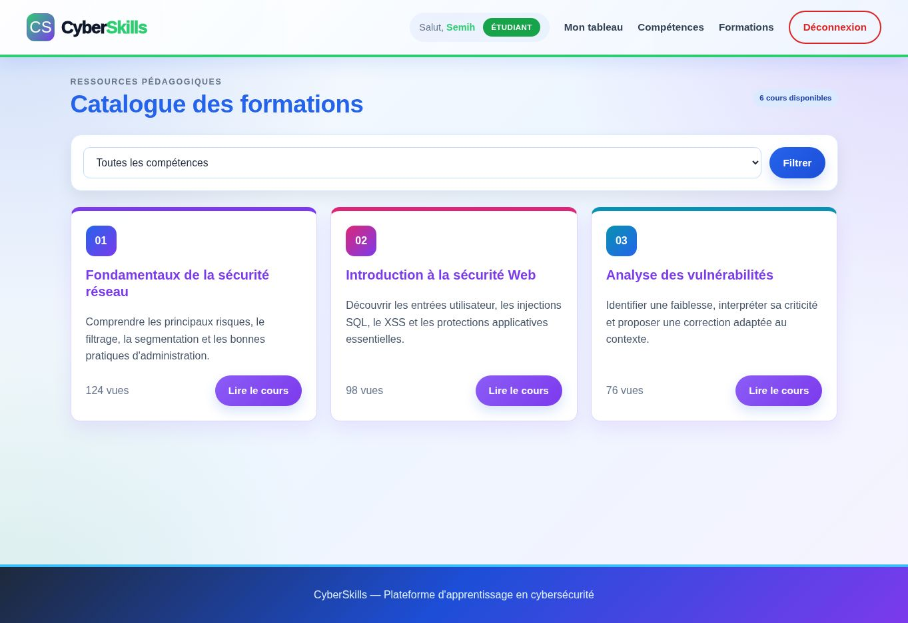

Mes Réalisations
SAE 2.04 - Projet Intégratif.
Conception en équipe de l'infrastructure complète de PharmaSanté : segmentation par VLAN, routage inter-VLAN Cisco L3, pare-feu Stormshield, services AD/DNS/DHCP et analyse Wireshark. Un projet de synthèse associant réseaux, systèmes et cybersécurité.
Voir les détails →

Plateforme "CyberSkills".
Développement intégral d'une plateforme d'apprentissage. Système de connexion sécurisé, gestion des rôles (Admin, Formateur, Étudiant), soumission de projets et statistiques visuelles.
Voir les détails →Reporting de Pentest.
Création d'un outil de reporting pour les audits de sécurité. Enregistrement d'infrastructures, historique des scans de vulnérabilités (Nmap) et génération d'une synthèse des failles identifiées.
Voir les détails →Déploiement d'Infrastructure.
Mise en place d'une architecture complète : routage dynamique sur matériel Cisco, déploiement d'un serveur de téléphonie XiVO (SIP, DECT), conteneurisation Docker et gestion d'AD.
Voir les détails →Traitement du Signal & RF.
Analyse spectrale (FFT) de signaux complexes. Étude de l'échantillonnage, réception TNT/FM et transmission hertzienne via l'utilisation d'oscilloscopes et d'analyseurs de spectre.
Voir les détails →Analyseur d'Emplois du Temps.
Développement d'un script Python permettant de charger, nettoyer et analyser des données d'emplois du temps à partir de fichiers CSV et ICS, avec filtrage par groupes.
Voir les détails →Mon Portfolio.
Création intégrale de ce site web. Réalisé uniquement en HTML et CSS couplé à du JavaScript.
Voir les détails →King Domino.
Conception et développement complet du jeu King Domino en Python. Gestion de matrices, algorithmes de placement complexes, vérification de compatibilité des tuiles et calcul de scores par zones.
Voir les détails →